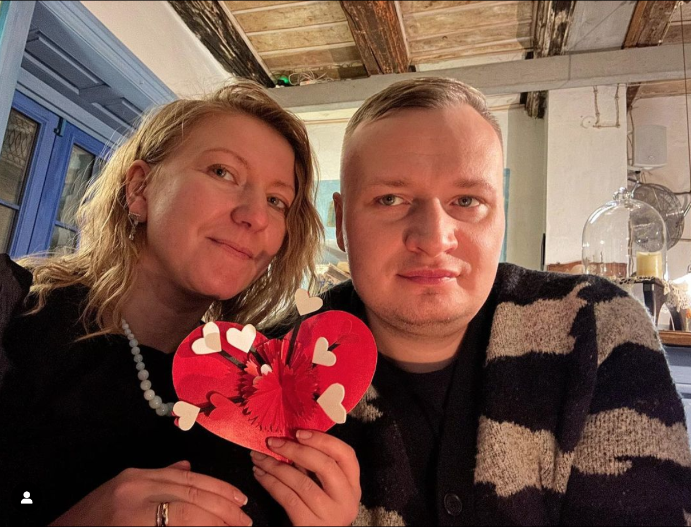

Hello! We are a family Igor and Olena from Ukraine Kherson city.
Our city was occupied by Russia in early March 2022. On November 11, 2022, our army liberated Kherson from the Russian occupying forces. Kherson is situated on the right bank of the Dnieper River, near the legendary Antonivsky Bridge. Our forces liberated the right bank with Kherson, but the occupiers remain on the left bank and continue to shell the city.
Our neighborhood, in particular, has been heavily affected. On June 30, 2023, our house was completely destroyed by the occupiers.
However, we are looking positively towards the future and plan to return to Kherson and rebuild our destroyed house or build a completely new one.
We have our own YouTube channel where we plan to make videos about our life. As soon as we have enough funds for construction, we will start filming videos showing the process of building our new home.
We can support us by service - https://www.buymeacoffee.com/storozhukud
Our YouTube: YouTube

My wife, Elena Kasyanenko, is a psychologist and artist. She discovered a wonderful psychological method to cope with our loss. Our hardships awakened strength within her. Since the beginning of the war, she couldn't paint. Overwhelmed by the weight of uncertainty, her inspiration scattered into the unknown. She sought to help people and started as a volunteer for "Children of Ukraine." Devoting herself to psychological work, she delved into learning and mastering complex topics. She began working as a psychologist in mobile brigades, traveling across Lviv, Ternopil, and Ivano-Frankivsk regions, living and helping others for the first time in her life. The loss of our home and her precious artistic possessions unlocked her artistic soul. She went to the mountains for an open-air painting session, exchanging 13 watercolor paintings she had created before the war for accommodation and food in the village of Slavske. In the past week, Elena has been waking up at 6 am and starting to paint. She presents her collections of artwork to you, dear friends. You can find her on Facebook at: www.facebook.com/kasyanenkol
Olena Kasyanenko
🧡 I have a goal to create a garden of life in an empty space. With my own strength, creativity, watercolor paintings, and instant impressions from observation, I will bring joy to you, dear people. May there be more joy in the lives of those who choose my artwork for their homes.
💚 And so, I am launching the "Auction of Joy" by Olena Kasyanenko. The auction will run for a week, from Friday to Friday. Starting next week, there will be a new painting, a new source of joy.
Our sossial media: Olena FB, Igor instagram